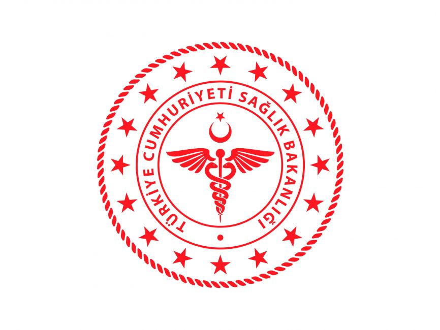

Yeni Hayat Hastanesi

YENİ HAYAT HASTANESİ
- Ömer Hekim Aile Sağlığı Merkezimizde 7 birim mevcuttur ve 7 Aile Hekimi görev yapmaktadır.
- Halen Dr Hülya KALAYCIOĞLU yönetici hekim görevini yürütmektedir.
- Hizmetlerimiz AHBS sistemiyle kayıt altına alınmaktadır.
- Ömer Hekim ASM ‘de her birimde bir doktor, bir de hemşiresi vardır.
- 34.28.074 nolu birim: Dr Hülya Kalaycıoğlu ve Hemş. Nilgün Otluoğlu
- 34.28.075 nolu birim: Dr Nurettin Kalaycıoğlu ve Hemş. Yeliz Erdim
- 34 .28.076 nolu birim: Dr Tuncay Gıcık ve Hemş. Nevin Yumuk
- 34.28.077 nolu birim: Dr R. Selçuk Kılıçaslan ve Hemş. Hediye Kakçı
- 34.28.237 nolu birim: Uzm Dr Abdulkadir Deniz ve Hemş. Ayşe Karaçam
- 34.28.205 nolu birim: Dr Gülbeniz Karakuş Gasımova ve Hemş. Sibel Kadıoğlu
- 34.28.206 nolu birim: Dr Zaure Bektassova ve Hemş. Nülifer Özüak
- Ayrıca hemşirelerimiz Esra Ulutaş ve Şule Nur Aksoy kurumumuzda sözleşmeli olarak çalışmakta olup danışma ve acil tedavi hizmetlerini yürütmektedir.
- Poliklinik, aşı ve izlem bilgileriniz kayıtlı olduğunuz doktorun bilgisayarında kayıt altına alınmaktadır.
- Kurumumuzda haftanın her günü laboratuvar tetkiki için sabah saat 09:00- 09:45 arası kan alınmaktadır